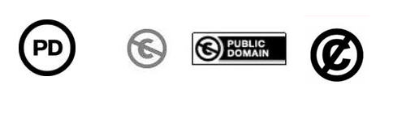
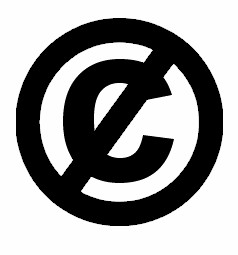

MERKING AV VERK SOM ER FALT I DET FRI VED
UTLØPT VERNETID:
PUBLIC DOMAIN MARK (PDM)

PDM brukes til å merke et verk eller ressurs som er i Public Domain
eller falt i det fri.
Internasjonal dugnad -- og et naturlig arbeidsområde for biblioteker.
Merking er første skritt mot formidling.
No Known Copyright
-- in any jurisdiction?
Hva med public domain-hybrider?
Merkingen bør backes eller kvalitetssikres av en seriøs aktør.
Hvert lands nasjonalbibliotek bør ha en fri programvare som holder
oversikt over når landets verk faller i det fri, og 1. januar
hvert år (Public
Domain Day) bør det skje et offisielt og
automatisert frislipp av både en liste over de nye
vernetids-utløpte verkene, og av verkene selv. Gjerne med
automatisk PD-stempling, og evt. automatisk opplasting til
Wikipedia og andre nettleksika og repositorier.
(Dersom du er opphaveren og ønsker å dele alle dine rettigheter,
ikke bruk Public Domain Mark. Bruk en fri lisens, f.eks. Creative
Commons Zero.)

About the Public Domain Mark:
https://creativecommons.org/about/pdm
PDM FAQ:
https://wiki.creativecommons.org/PDM_FAQ
PDM Chooser:
https://creativecommons.org/choose/mark/